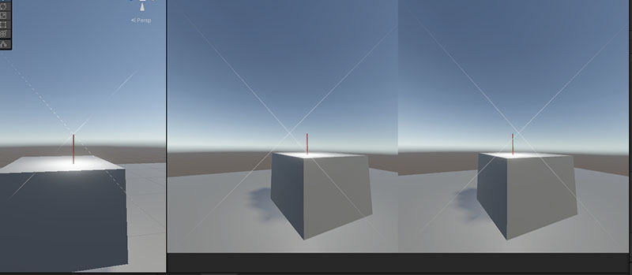
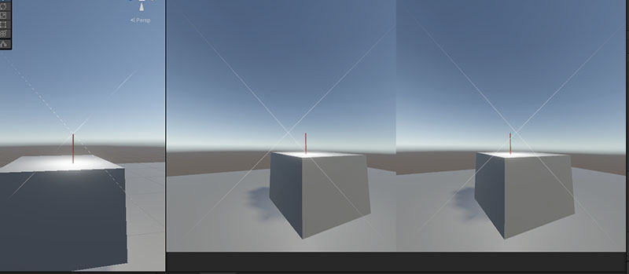
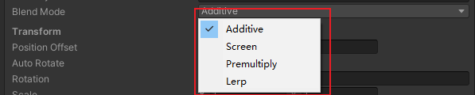
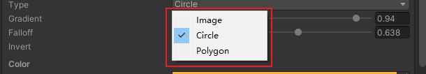
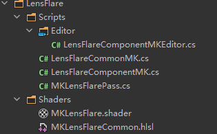
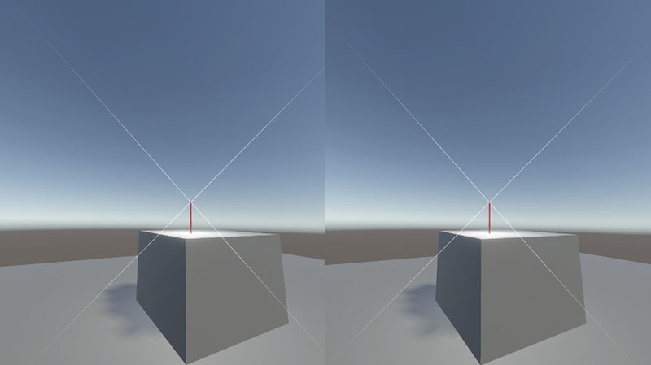

LensFlare(SRP) in VR
前言
Unity的URP和HDRP针对LensFlare也就是炫光，使用的是同一套逻辑(LensFlare(SRP))。但就是不支持VR，无论是单通道还是多通道。
Unity这样做也有一定的道理，本来这个效果就是模拟镜头的一种缺陷，人眼一般不会看到这种炫光，所以VR不支持也是理所当然的。
但本着没事找事的心态，权当练习，我翻看了这部分的源码，做了一点修改，使之能兼容VR。
效果如下：
这里是仓库地址
在我给官方提了这个BUG后，回复是就是不支持。
论坛上也有有说这个问题已经存在很久了。
 

分析
先从看它的shader入手吧，很简单，就一个文件
LensFlareDataDriven.shader，分了4个pass，每个pass的区别仅仅在于Blend的方式，分别对应了Additive、Screen、Premultiply、Lerp四种BlendMode。

关键的逻辑在LensFlareCommon.hlsl中，输入有两张贴图，颜色一张，遮挡一张，然后是一个颜色和5个向量，分别定义了颜色，旋转、缩放、屏幕位置、偏移、宽高比、遮挡半径、遮挡采样次数、是否离屏渲染以及边缘偏移、羽化范围、多边形属性等等。
TEXTURE2D(_FlareTex);
SAMPLER(sampler_FlareTex);
#if defined(HDRP_FLARE) && defined(FLARE_OCCLUSION)
TEXTURE2D_X(_FlareOcclusionTex);
SAMPLER(sampler_FlareOcclusionTex);
#endif
float4 _FlareColorValue;
float4 _FlareData0; // x: localCos0, y: localSin0, zw: PositionOffsetXY
float4 _FlareData1; // x: OcclusionRadius, y: OcclusionSampleCount, z: ScreenPosZ, w: ScreenRatio
float4 _FlareData2; // xy: ScreenPos, zw: FlareSize
float4 _FlareData3; // x: Allow Offscreen, y: Edge Offset, z: Falloff, w: invSideCount
float4 _FlareData4; // x: SDF Roundness, y: Poly Radius, z: PolyParam0, w: PolyParam1而且都通过定义宏的方式来增强了可读性，学到了。
#define _LocalCos0 _FlareData0.x
#define _LocalSin0 _FlareData0.y
#define _PositionTranslate _FlareData0.zw
#define _OcclusionRadius _FlareData1.x
#define _OcclusionSampleCount _FlareData1.y
#define _ScreenPosZ _FlareData1.z
#ifndef _FlareScreenRatio
#define _FlareScreenRatio _FlareData1.w
#endif再往下就发现了从shadertoy拿来的工具函数float4 ComputeCircle(float2 uv)
float4 ComputePolygon(float2 uv_)，用来程序化直接从UV绘制椭圆和多边形的。
float4 GetFlareShape(float2 uv)
{
#ifdef FLARE_CIRCLE
return ComputeCircle(uv);
#elif defined(FLARE_POLYGON)
return ComputePolygon(uv);
#else
return SAMPLE_TEXTURE2D(_FlareTex, sampler_FlareTex, uv);
#endif
}这里看到绘制分成三种，圆，多边形，贴图。对应了这里的Type

最后来看看vert函数
float4 posPreScale = float4(2.0f, 2.0f, 1.0f, 1.0f) * GetQuadVertexPosition(input.vertexID) - float4(1.0f, 1.0f, 0.0f, 0.0);
float2 uv = GetQuadTexCoord(input.vertexID);
uv.x = 1.0f - uv.x;
output.texcoord.xy = uv;
posPreScale.xy *= _FlareSize;
float2 local = Rotate(posPreScale.xy, _LocalCos0, _LocalSin0);
local.x *= screenRatio;
output.positionCS.xy = local + _ScreenPos + _PositionTranslate;
output.positionCS.z = 1.0f;
output.positionCS.w = 1.0f;
用传入的屏幕坐标来缩放、旋转、乘上宽高比，加上UV偏移和另一个传入的偏移量直接写入positionCS。这里的positionCS是裁剪空间坐标，因为w设置为1，那xy范围就是(-1,1)，(0,0)表示屏幕中心。
看到这就已经猜到它为什么不支持VR了，因为屏幕坐标是事先用C#脚本通过Camera的属性计算好的，而且估计计算时没有考虑VR下有两个摄像机，导致最终的屏幕位置是错误的。
修改
那修改的思路就确定了，增加一个向量，记录炫光分别在左右眼下的屏幕位置，依据USING_STEREO_MATRICES和unity_StereoEyeIndex来判断当前到底该使用哪一个屏幕坐标。
脚本修改
回到代码中，从LensFlareComponent一路往回推，发现主要的逻辑代码都在LensFlareCommonSRP中，用单例来管理，而调用则是在URP的UniversalRenderer中，在后处理时，由PostProcessPass调用，通过FrameDebugger也能看到。
URP的代码没法修改，只好全部另起炉灶，自定义RenderFeature、pass、Component等，把原来的逻辑先复制一遍，开始修改。

从PostProcessPass的DoLensFlareDatadriven中可以看到
void DoLensFlareDatadriven(Camera camera, CommandBuffer cmd, RenderTargetIdentifier source, bool usePanini, float paniniDistance, float paniniCropToFit)
{
var gpuView = camera.worldToCameraMatrix;
var gpuNonJitteredProj = GL.GetGPUProjectionMatrix(camera.projectionMatrix, true);
// Zero out the translation component.
gpuView.SetColumn(3, new Vector4(0, 0, 0, 1));
var gpuVP = gpuNonJitteredProj * camera.worldToCameraMatrix;
LensFlareCommonSRP.DoLensFlareDataDrivenCommon(m_Materials.lensFlareDataDriven, LensFlareCommonSRP.Instance, camera, (float)m_Descriptor.width, (float)m_Descriptor.height,
usePanini, paniniDistance, paniniCropToFit,
true,
camera.transform.position,
gpuVP,
cmd, source,
(Light light, Camera cam, Vector3 wo) => { return GetLensFlareLightAttenuation(light, cam, wo); },
ShaderConstants._FlareOcclusionTex, ShaderConstants._FlareOcclusionIndex,
ShaderConstants._FlareTex, ShaderConstants._FlareColorValue,
ShaderConstants._FlareData0, ShaderConstants._FlareData1, ShaderConstants._FlareData2, ShaderConstants._FlareData3, ShaderConstants._FlareData4,
false);
}
这里是用的camera.worldToCameraMatrix来直接拿的矩阵，但在VR环境下，应该要用camera.GetStereoViewMatrix(eye);的方式分别来取左右眼的矩阵。所以这里添加上左右眼的VP矩阵，传入DoLensFlareDataDrivenCommon中。
Matrix4x4 getMatrixFromEye(Camera camera, Camera.StereoscopicEye eye)
{
var gpuView = camera.GetStereoViewMatrix(eye);
var gpuNonJitteredProj = GL.GetGPUProjectionMatrix(camera.GetStereoNonJitteredProjectionMatrix(eye), true);
// Zero out the translation component.
gpuView.SetColumn(3, new Vector4(0, 0, 0, 1));
var gpuVP = gpuNonJitteredProj * gpuView;
return gpuVP;
}
void DoLensFlareDatadriven(Camera camera, CommandBuffer cmd, RenderTargetIdentifier source, bool usePanini,
float paniniDistance, float paniniCropToFit)
{
......
var leftGpuVP = getMatrixFromEye(camera, Camera.StereoscopicEye.Left);
var rightGpuVP = getMatrixFromEye(camera, Camera.StereoscopicEye.Right);
LensFlareCommonMK.DoLensFlareDataDrivenCommon(m_Material, LensFlareCommonMK.Instance, camera,
(float)m_Descriptor.width, (float)m_Descriptor.height,
usePanini, paniniDistance, paniniCropToFit,
true,
camera.transform.position,
gpuVP,
leftGpuVP,
rightGpuVP,
cmd, source,
......
}来到DoLensFlareDataDrivenCommon函数，这里必须吐槽下这个函数，近16个参数就不说了，函数体也有500多行。。。
在这里增加一个函数来计算炫光在左右眼中的屏幕位置
static public Vector2 GetScreenPos(Camera.MonoOrStereoscopicEye eye, LensFlareComponentMK comp, Camera cam, bool isCameraRelative, Matrix4x4 viewProjMatrix)
{
Light light = comp.GetComponent<Light>();
Vector3 positionWS;
Vector3 viewportPos;
bool isDirLight = false;
if (light != null && light.type == LightType.Directional)
{
positionWS = -light.transform.forward * cam.farClipPlane;
isDirLight = true;
}
else
{
positionWS = comp.transform.position;
}
viewportPos = WorldToViewport(eye, cam, !isDirLight, isCameraRelative, viewProjMatrix, positionWS);
Vector2 screenPos = new Vector2(2.0f * viewportPos.x - 1.0f, 1.0f - 2.0f * viewportPos.y);
return screenPos;
}在使用相机位置的时候也分别要用左右眼球的位置
public static Vector3 GetEyePosition(Side eye)
{
if (XRSettings.enabled)
{
Vector3 posLeft;
InputDevice device =
InputDevices.GetDeviceAtXRNode(eye == Side.Left ? XRNode.LeftEye : XRNode.RightEye);
if (device.isValid)
{
if (device.TryGetFeatureValue(
eye == Side.Left ? CommonUsages.leftEyePosition : CommonUsages.rightEyePosition,
out posLeft))
return posLeft;
}
Debug.LogError("can not find eyePos");
return default(Vector3);
}
else
{
return Camera.main.transform.position;
}
}计算出来后，添加进去
var leftPos = GetScreenPos(Camera.MonoOrStereoscopicEye.Left,comp,cam,isCameraRelative,LeftViewProjMatrix);
var rightPos = GetScreenPos(Camera.MonoOrStereoscopicEye.Right,comp,cam,isCameraRelative,RightViewProjMatrix);
cmd.SetGlobalVector(ShaderConstants._FlareData5,new Vector4(leftPos.x,leftPos.y,rightPos.x,rightPos.y));Shader修改
然后是shader的修改
增加一行输入，并定义好宏
float4 _FlareData5;
#define _LeftScreenPos _FlareData5.xy
#define _RightScreenPos _FlareData5.zwvert中根据再unity提供的宏来判断一下
#if defined(USING_STEREO_MATRICES)
float2 _ScreenPos = unity_StereoEyeIndex == 1? _RightScreenPos : _LeftScreenPos;
# else
float2 _ScreenPos = _CameraScreenPos;
# endif就完工了。

这里其实还是有个小问题，这种效果其实不符合物理。
因为如果在左右眼分别放置一个相机，拍出来的炫光的偏移位置（#define _PositionTranslate _FlareData0.zw）其实应该是各不相同的。
但这会造成体验VR的人视觉混乱，所以为了体验效果，这里使用的偏移还是之前相机（也就是两眼中间位置）的偏移，只是修复了炫光原点的屏幕坐标位置。